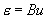
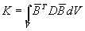
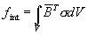
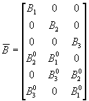

The linear brick
elements used in GEOMEC perform poorly in bending dominated problems and in
nearly incompressible situations. For this reason an assumed strain concept is
available. This method is not applicable to quadratic elements.
In GEOMEC the
selective reduced integration method is implemented termed constant shear. In
selective reduced integration the shear strains and/or volumetric strains are
evaluated in the element midpoint only. This leads to a modified strain operator
B
with no additional degrees of freedom involved.
For a standard displacement finite element, the definition of the strain in geometrically linear Finite Element Analysis is now written as

Matrix
B relates the strains to the (nodal) displacements. The key idea of the
B
approach is to replace the compatible strain operator
B by an assumed strain operator
B
. The element properties are now defined as
|
 |
Element
stiffness |
|
 |
Element
internal force |
In GEOMEC the
constant shear method is available with the assumed strain operator
B
:

with
Bi0 being the values evaluated in the element
midpoint in case of an eight-node brick. The resulting element has constant
shear strains and is superior to the standard element in bending dominated
problems.
For rectangular
geometries, this element does not suffer from parasitic shear strains and gives
the exact solution for pure bending. However, for solid
bricks constant shear may cause torsional spurious modes.
Default no enhanced assumed strain method is used. To activate this option, mark Use Enhanced Assumed Strain Method in the Analysis options dialog.